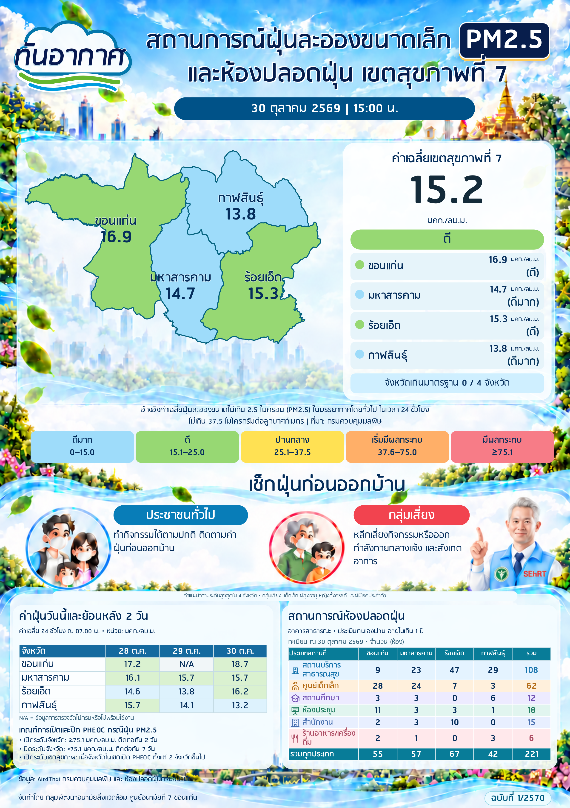

ทันอากาศ 30 ตุลาคม 2569

ค่าเฉลี่ยรายจังหวัดจากสถานีที่มีข้อมูลครบ ณ เวลาเดียวกัน; ค่าเฉลี่ยเขตให้น้ำหนักจังหวัดเท่ากัน; คัดกรอง PHEOC ด้วยค่าสูงสุดสถานีรายจังหวัด ไม่ใช่สถานะเปิดจริง
เกณฑ์คัดกรองอัตโนมัติไม่ใช่การยืนยันว่าเปิดหรือปิด PHEOC จริง ข้อมูลย้อนหลังไม่ครบจะไม่นับข้ามวัน
ห้องปลอดฝุ่น: นับรายการต้นทางอาคารสาธารณะ ประเมินตนเองผ่าน ในช่วงวันครบหนึ่งปีย้อนหลังถึงวันรายงาน รวมวันต้นและวันปลาย; ไม่ใช่ยืนยันเปิดบริการ; คำนวณอายุใหม่ทุกวันจากทะเบียนที่อัปเดตรายสัปดาห์ ณ 2026-10-30; รายการเพิ่ม/แก้ไขหลังวันดังกล่าวจะปรากฏเมื่ออัปเดตชุดข้อมูลถัดไป จำนวน 221 รายการ; ไม่มีรหัสห้องถาวรใน API จึงยังไม่อ้างว่าเป็นห้องไม่ซ้ำที่ตรวจยืนยันแล้ว
พื้นที่ห้องปลอดฝุ่นที่ขาดอำเภอ/ตำบล: 1 รายการ
สถานี: 46t ส่วนอุทกวิทยา สำนักงานทรัพยากรน้ำภาคที่4 ขอนแก่น 2026-10-30 15:00
114t สวนสุขภาพประมวลสุข 2026-10-30 15:00
113t บึงพลาญชัย 2026-10-30 15:00
107t สวนสาธารณะแก่งดอนกลาง 2026-10-30 15:00
ข้อมูลสรุปและวิธีคำนวณ JSON
มาตรฐาน PM2.5: คพ. | คำแนะนำ: กรมอนามัย | เกณฑ์ PHEOC ปี 2569 | ข้อมูลห้องปลอดฝุ่น